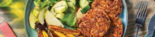

Caribbean-Spiced Bean Patties

Ingredients
Method
-
Preheat the oven to 240°C/220°C fan-forced. Cut the potato into fries. Place on a lined oven tray. Drizzle with
olive oil, season with salt and toss to coat. Bake until tender, 20-25 minutes.
- While the fries are baking, drain and rinse the red kidney beans. Grate the carrot.
-
In a medium bowl, lightly mash the beans. Add the carrot, plain flour, garlic paste, plant-based shredded Cheddar
cheese, a pinch of chilli flakes (if using) and mild Caribbean jerk seasoning. Mix well. Using damp hands, roll
the mixture into small balls, then flatten into 1cm-thick patties. Transfer to a plate. You should get 3-4 patties
per person. Refrigerate for 5 minutes. TIP: Chilling the mixture helps the patties firm up!
-
While the patties are in the fridge, thinly slice the apple. Roughly chop the cucumber. In a second medium bowl,
combine a drizzle of white wine vinegar and olive oil. Season with salt and pepper. Top with the mixed salad
leaves, apple and cucumber. Set aside. TIP: Toss the salad just before serving to keep the leaves crisp.
-
In a large frying pan, add enough olive oil to coat the base over a medium-high heat. When the oil is hot, cook
the patties, in batches, until golden, 2-4 minutes each side. Transfer to a plate lined with paper towel. TIP: Add
extra oil between batches if needed to prevent the patties from sticking to the pan!
-
Toss the salad. Divide the Caribbean-spiced bean patties, fries and salad between plates. Serve with the
plant-based smokey aioli.